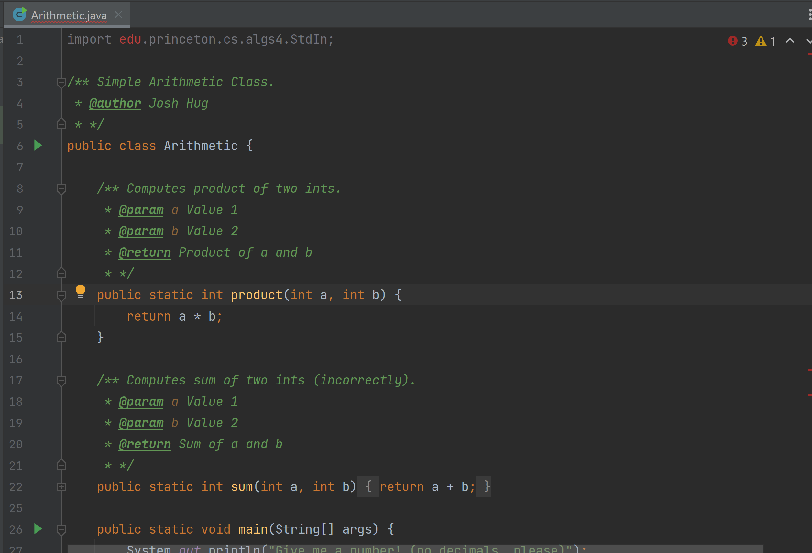

FAQ
Student-Facing Setup FAQ Doc
Please take a look at the setup FAQ doc for additional setup assistance!
I can’t find the plugins for IntelliJ!
You likely installed the ultimate edition instead of the community edition. Make sure you have the community edition installed!
When I try to push, I get the error “failed to push some refs”
If you see a hint that says “Updates were rejected because the tip of your current branch was behind its remote counterpart”, then read this section of the Git WTFS.
I set up SSH for GitHub, but I get the error “Connection timed out”
SSH only works on secure (password-protected) networks. If you’re connected to CalVisitor or another an insecure network, git commands that try to talk to GitHub will fail.
To fix this, connect to eduroam or a secure WiFi network.
Some students ran into an issue with “Support with password authentication was removed…” when cloning their personal repository.
If cloning with https doesn’t work, please try using the ssh to clone instead:
git clone git@github.com:Berkeley-CS61B-Student/sp24-s***.git
curl: (35) schannel: next InitializeSecurityContext failed: Unknown error (0x80092012) - The revocation function was unable to check revocation for the certificate.
Add the --ssl-no-revoke flag to the curl command (e.g. if the command was previously curl https://www.google.com,
change it to curl --ssl-no-revoke https://www.google.com).
WARNING: REMOTE HOST IDENTIFICATION HAS CHANGED
At the bottom of the error, it should say Host key for [something] has changed.... If something is github.com
or any of the instructional machines, then continue with this guide. Otherwise, please make a private question on Ed.
To fix this error, run ssh-keygen -R [something], and replace [something] with what the error message contained.
This generally means that the remote machine has changed its host keys. Please verify that the new host keys are
correct if you do not trust the machine (GitHub host keys are available
(here)[https://docs.github.com/en/authentication/keeping-your-account-and-data-secure/githubs-ssh-key-fingerprints]).
On Gradescope, I’m missing required files
First, make sure that you’ve pushed your code! You can check this by viewing your repository on GitHub.
Secondly, the expected file structure is
sp24-***
└── lab01
├── src
│ └── Arithmetic.java
└── tests
└── ArithmeticTest.java
Note that the files are inside the lab01 directory. If the files aren’t
inside lab01, then the autograder won’t be able to find them.
If you’re sure you’ve done the above correctly, you may have two copies of your sp24-s*
folder (with differing locations on your computer). Be sure that the one in your terminal
and the one in IntelliJ match, otherwise your changes won’t be recorded! You can see the
current working directory of your terminal by running pwd.
I’m using Mac, and I get “Unable to load Java Runtime Environment”
Run brew reinstall java, and look for the command that starts sudo ln,
right under “For the system wrappers to find this JDK…”. Copy-paste and
run that command.
After this, your newly installed Java should appear in IntelliJ.
In IntelliJ, when I open up Arithmetic.java, my import is grayed out at the top.
In some cases, you might get something like this:

IntelliJ can be very weird - if you’ve already ensured that your library-sp24 is
there (navigate to File –> Project Structure –> Libraries) to check everything seems okay),
then try deleting the library, reimporting it and clicking “Apply”. Make sure to hit “OK” before
exiting the window.